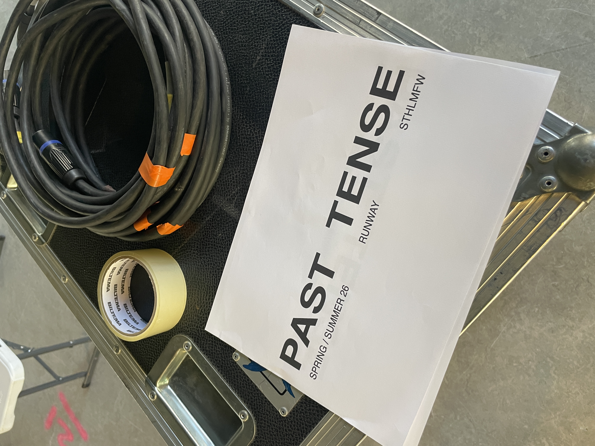
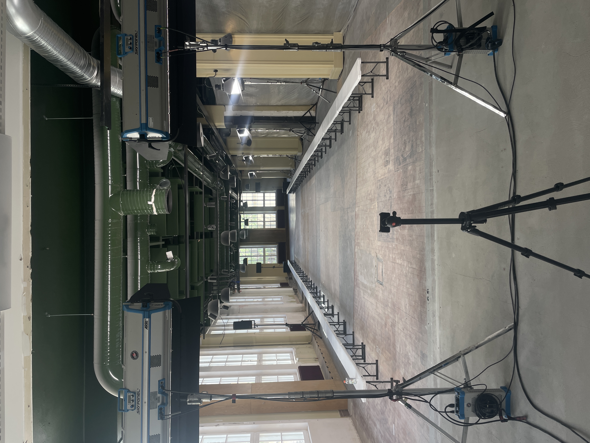
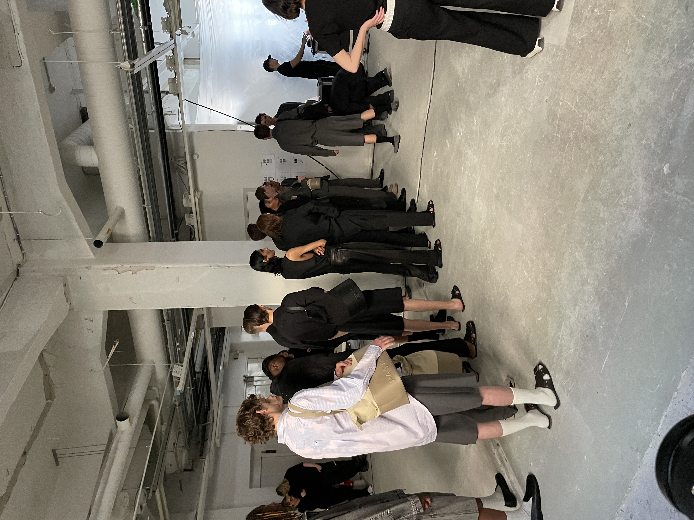
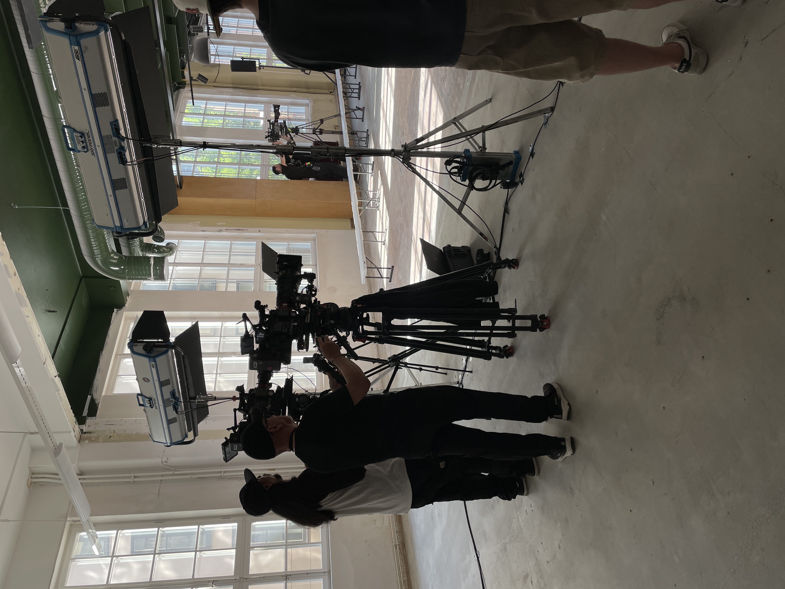
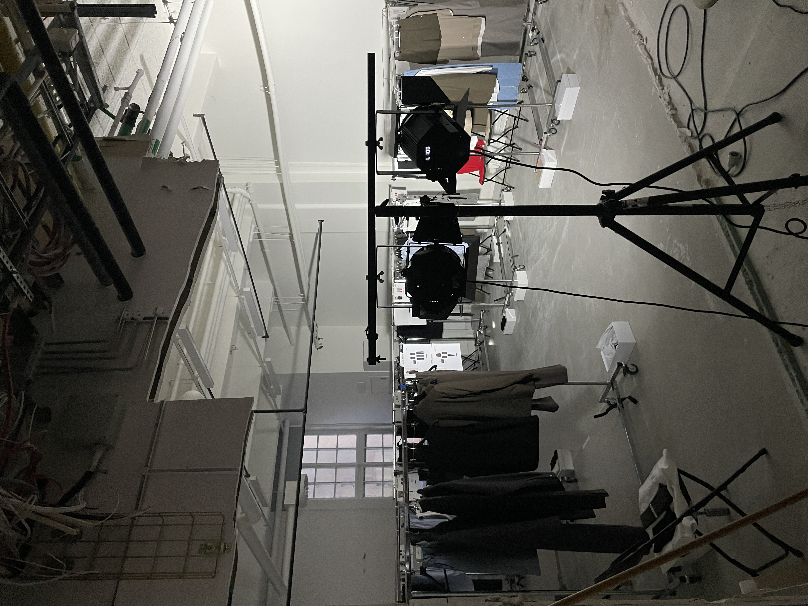
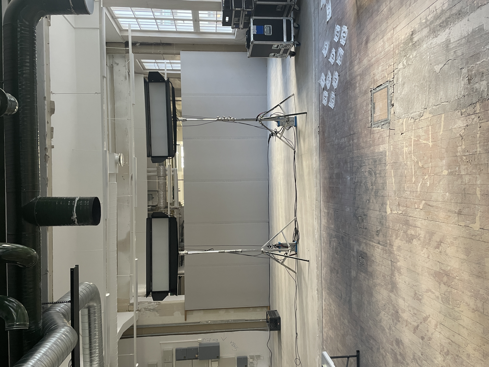

PROJECT / EVENT / 2025
STHLM Fashion week
During Stockholm Fashion Week, I worked as a lighting technician with the clothing brand Past Tense. My role was to design and operate lighting that highlighted the collection and enhanced the overall atmosphere of the show. By adapting the lighting to the garments, movement, and music, I helped create a cohesive and visually impactful experience where fashion and stage design came together.
- Year
- 2025
- Client
- Past Tense
- Role
- Lighting technician
- Location
- Stockholm, Sweden






